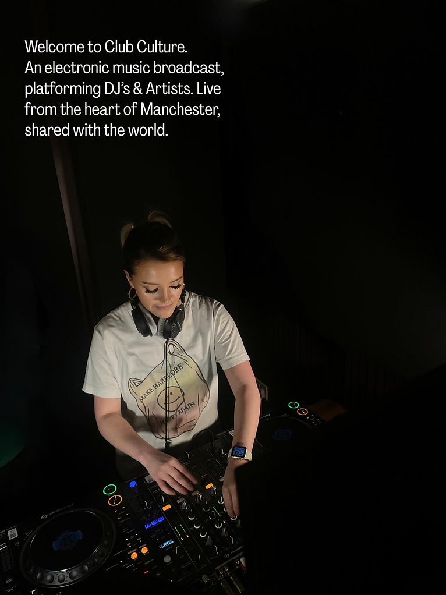
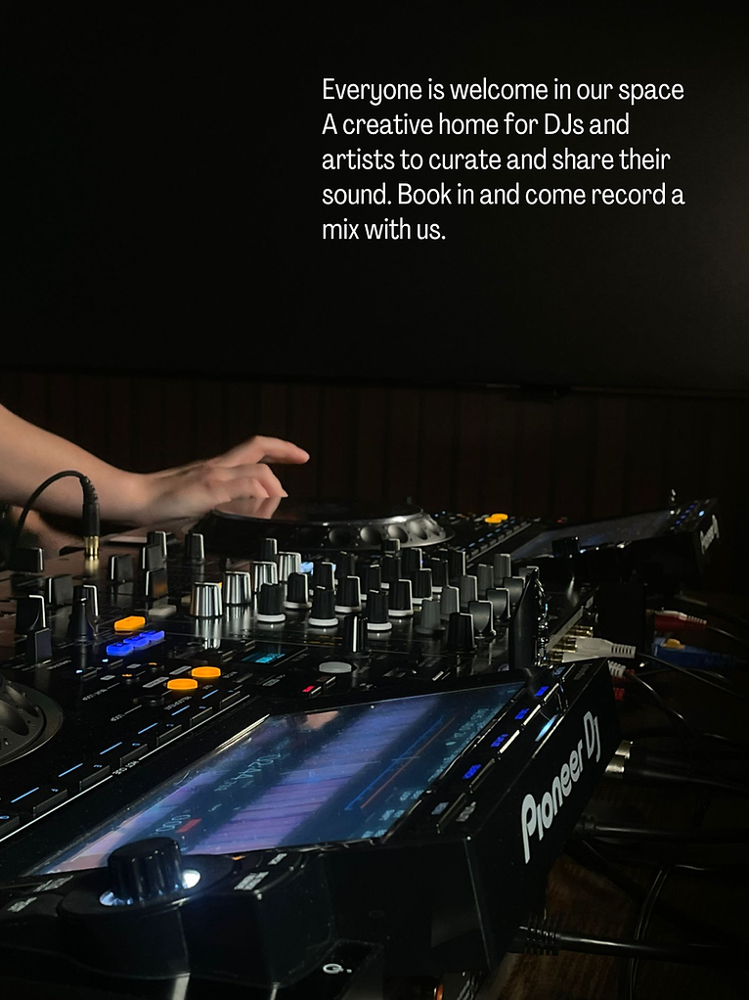

Radio Booking Questions
Everyone is welcome to join us live on air! We celebrate all genres, sounds, and styles. The only requirement is that you’re comfortable and confident mixing on Pioneer CDJs.
If you’re still finding your rhythm, you’re welcome to book a private studio session first, perfect for practising before your live show.
For radio shows, we ask for a contribution of £12 per hour.
Running a platform like this comes with ongoing costs - from studio rent and equipment finance & upkeep to energy, cleaning, and software.
Whilst we keep fees as low as possible, and our team volunteers their time to keep things running smoothly. Your support helps us continue providing a space for creativity and community.
It remains essential to us as a brand that we remain accessible for all. We offer a program called the Creative Access Fund - if you would like to perform on the radio however are experiencing financial difficulty, please email radio@clubcurated.co.uk. Each month we allocate hours towards the access fund, and will work towards supporting you to perform.
Absolutely - nothing beats mixing with your mates! Just book your slot together and include both artist names.
Yes! We welcome one guest per artist in the studio.
We typically release slots four to six weeks in advance. If we’re fully booked, we’ll release dates further ahead.
We love seeing DJs return! Your welcome to book in when you wish, however we will be opening up residency slots in January 2026.
Our studio is based on Bexley Square, Chapel Street, on the edge of Manchester City Centre (M3 6DB).
We’ve got two Pioneer CDJ-3000s and a four-channel Pioneer mixer, ready for you to plug in and play.
If you’d like to bring additional equipment (like an FX unit) please let us know in advance so we can confirm compatibility. You can email us via studio@clubcurated.co.uk and we will be in touch.
At the moment, the studio is digital / CDJ only, but we’re exploring options for vinyl in the future!
Just yourself, headphones, and your USB (maybe a spare - just in case!).
Our space is relaxed, inclusive, and creative. Built on good energy, collaboration, and community.
Absolutely! Your mix will be uploaded for you to view and download shortly after your session - usually within a couple of hours.
Absolutely, we love working with other promoters, collectives, and labels!
If you’re interested, email us at radio@clubcurated.co.uk and we’ll help you arrange your session.
The sessions are live streamed on our social channels for viewers to tune in live!
Of course — we encourage you to share and showcase your work. Just credit Club Culture Radio when possible.
Yes absolutely! We post a variety of promotion on our socials - and will provide you with the live stream link and content if you would like to promote it.
Please arrive 15 minutes before your session. We’ll welcome you into the waiting area, and around five minutes before your slot, we’ll take you upstairs to the studio so you can get settled before the start of your set.
Once your session is booked, you’ll receive an email with a contact number.
When you arrive at Bexley Square (you’ll know you’re there when you see the metal horse!), text the number — we’ll come down to greet you and let you in.
If you’re running late, please text us as soon as possible. Unfortunately we are not able to extend your allocated slot, due to following bookings.
If you cancel at least 48 hours in advance, we’ll issue a voucher so you can rebook.
If you can’t make it last minute, you’re welcome to transfer your slot to a friend or ask us to help fill it.
Getting to the studio
Address
Bexley Square
Chapel Street
Manchester
M3 6DB
Car Parking
Cleminson Street
Salford
M3 6AY
1 Minute Walk
£1.50 for 2.5 Hours
Taxi drop off
The New Oxford
11 Bexley Square
(Ford Street)
M3 6DB
Bus
(Closest bus is next to the square)
| 8 / 100 / 67 | From Shudehill Interchange |
| 35 / 36 / 38 | From Picadilly Gardens |
| V1 / V2 / 50 | Oxford Road |
Train
Salford Central (4 Minute Walk)
Victoria Station (15 Minute Walk)
Piccadilly Station (30 Minute Walk)
Deansgate (22 Minute Walk)